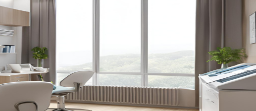

お知らせ
診療時間
| 月 | 火 | 水 | 木 | 金 | 土 | 日 | |
|---|---|---|---|---|---|---|---|
| 09:00～12:00 | ● | ● | ● | ● | ● | ● | / |
| 13:00～18:00 | ● | ● | ● | ● | ● | / | / |
休診日：土曜午後・日祝
当院のご案内

アクセス
住所
〒380-0838
長野県長野市南長野県町484-1 センターボア 8F
駐車場
医院前に当院専用駐車場あり
備考
長野駅から徒歩で約20分
長野駅から車で約５分